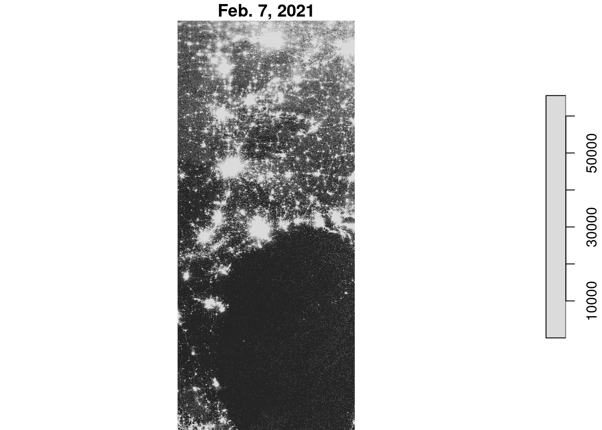
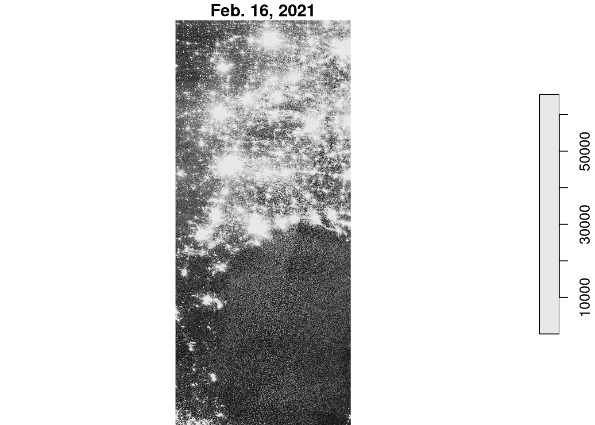
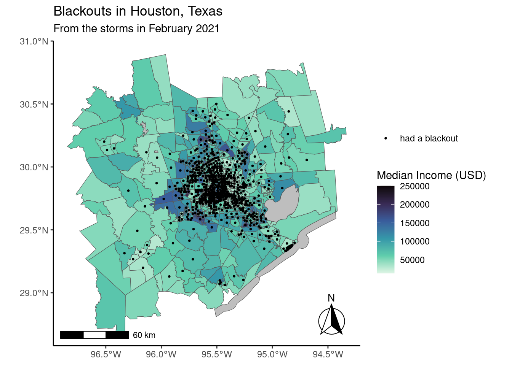
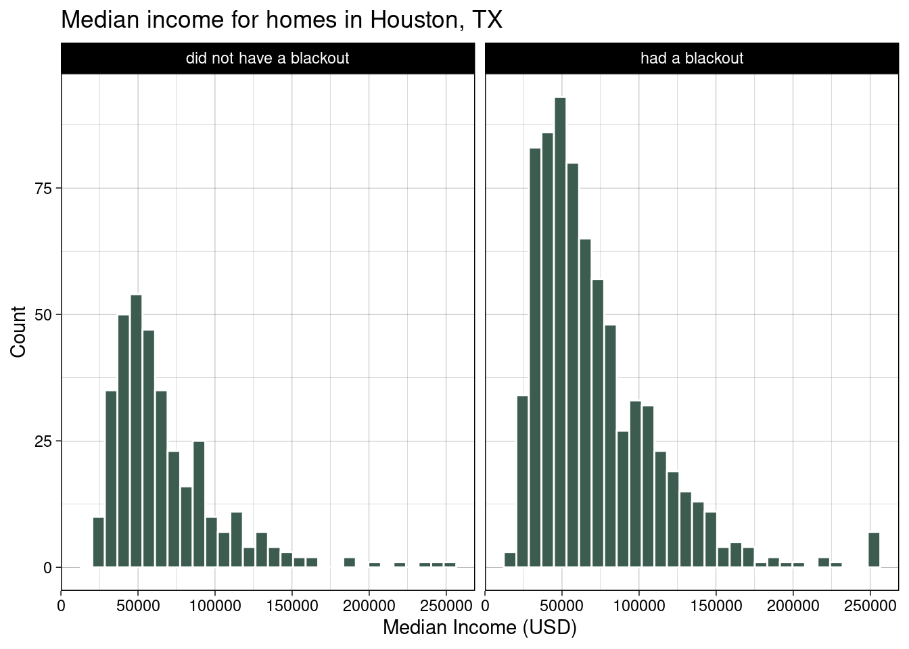

── Attaching core tidyverse packages ──────────────────────── tidyverse 2.0.0 ──
✔ dplyr 1.1.3 ✔ readr 2.1.4
✔ forcats 1.0.0 ✔ stringr 1.5.0
✔ ggplot2 3.4.4 ✔ tibble 3.2.1
✔ lubridate 1.9.2 ✔ tidyr 1.3.0
✔ purrr 1.0.2
── Conflicts ────────────────────────────────────────── tidyverse_conflicts() ──
✖ dplyr::filter() masks stats::filter()
✖ dplyr::lag() masks stats::lag()
ℹ Use the conflicted package (<http://conflicted.r-lib.org/>) to force all conflicts to become errors
library(sf)
Linking to GEOS 3.10.2, GDAL 3.4.1, PROJ 8.2.1; sf_use_s2() is TRUE
library(stars)
Loading required package: abind
library(terra)
terra 1.7.55
Attaching package: 'terra'
The following object is masked from 'package:tidyr':
extract
library(ggspatial)
Project Overview
“In February 2021, the state of Texas suffered a major power crisis, which came about as a result of three severe winter storms sweeping across the United States on February 10–11, 13–17, and 15–20.”[^wiki] For more background, check out these engineering and political perspectives.
In this project, I am interested in estimating the number of homes in Houston that lost power as a result of the first two storm and investigating if socioeconomic factors are predictors of communities recovery from a power outage
About the data
To estimate homes that lost power I used remotely-sensed night lights data from the Visible Infrared Imaging Radiometer Suite (VIIRS) onboard the Suomi satellite. In particular, you will use the VNP46A1 to detect differences in night lights before and after the storm to identify areas that lost electric power. To look at specific homes and factor in roads, I also used data from OpenStreetMap. And finally, socioeconomic data was obtained from the US Census Bureau.
Data Analysis
Night Lights
Since these night light files are quite large, I am using stars::read_stars() to work with the raster data. Here I have two tiles for 2021-02-07 and two tiles for 2021-02-16.
# read in night light files using read_stars()feb7_1 <-read_stars("data/VNP46A1/VNP46A1.A2021038.h08v05.001.2021039064328.tif")feb7_2 <-read_stars("data/VNP46A1/VNP46A1.A2021038.h08v06.001.2021039064329.tif")feb16_1 <-read_stars("data/VNP46A1/VNP46A1.A2021047.h08v05.001.2021048091106.tif")feb16_2 <-read_stars("data/VNP46A1/VNP46A1.A2021047.h08v06.001.2021048091105.tif")
The tile pairs now need to be combined to create a full image of out area of interest.
# combine both feb. 7thfeb7 <-st_mosaic(feb7_1, feb7_2)# combine both feb. 16thfeb16 <-st_mosaic(feb16_1, feb16_2)
Now that we have the full area we want, let’s look at what the combined tiles look like.
plot(feb7, main ="Feb. 7, 2021") # looking at the file
downsample set to 1

plot(feb16, main ="Feb. 16, 2021") # looking at the file
downsample set to 1

To find if there is a different in the night lights from before and after the storm, I found the different between the light intensity, assuming that any location that experienced a drop of more than 200 nW cm-2sr-1 experienced a power outage.
# finding the difference in night lightsnight_diff <- (feb7 - feb16)#plot(night_diff, main = "Difference in night light")# create a mask, sectioning in to 200 to infinity; the rest become NAnight_mask <-cut(night_diff, c(200, Inf), labels ="outage")# the night mask should have one level "outage" and NA for the rest; check using:# unique(night_mask$VNP46A1.A2021038.h08v05.001.2021039064328.tif)# vectorizing night_mask using st_as_sfnight_mask_vec <-st_as_sf(night_mask) %>%st_make_valid() # fix invalid geometries# checking that it is now sf data.frame# class(night_mask_vec)
In this project I am wanting to specifically look at Houston, and right now, the map covers more area than just Houston. To focus in on Houston, I first need to define the coordinates of the city boundary and then turn them into a polygon and simple features collection.
# creating Houston border with the given coordinates using st_polygon()houston_border <-st_polygon(list(rbind(c(-96.5,29), c(-96.5,30.5), c(-94.5, 30.5), c(-94.5,29), c(-96.5,29)))) # rbind combines objects# convert to sfc and define crshouston_border_sf <-st_sfc(houston_border, crs ='EPSG:4326')
Now that the boarder is defined, I can use it to crop the blackout mask. Additionally, I need to make sure that both of the objects have the same coordinate reference system (CRS), and in this case, I want to use EPSG:3083 (NAD83 / Texas Centric Albers Equal Area).
# crop using the Houston borderhouston_mask <- night_mask_vec[houston_border_sf, ,] # subset using the border object# reproject cropped object to new crsoutage_mask <-st_transform(houston_mask, crs ='EPSG:3083')#plot(outage_mask)
Highways
Highways often make up a large portion of observable night light and this is not something I want to capture. So, using the roads data, I will exclude areas with roads, as well as include a 200m buffer around the roads.
This data includes more than just highways, so it is important to select just the highways (motorways).
## highway data ### define sql queryquery_highways <-"SELECT * FROM gis_osm_roads_free_1 WHERE fclass='motorway'"# load highway data using the query and reproject to EPSG:3083highways <-st_read("data/gis_osm_roads_free_1.gpkg", query = query_highways) %>%st_transform(highways, crs ='EPSG:3083')# highway buffer setting distance to 200mhighway_buffer <-st_buffer(x = highways, dist =200) %>%st_union() # dissolve undissolved buffers
Using the newly prepared highway data, I can now exclude areas within 200m of a highway.
# combine the geometries and exclude those within 200m of a highwaymask_houston_highway <-st_difference(outage_mask, highway_buffer)## check that areas have been excluded ### nrow(mask_houston_highway) > nrow(outage_mask) # output should be FALSE # plot(mask_houston_highway) # check out what it looks like
There were 7247 areas that experienced blackouts that are further than 200m from a highway.
Homes
Now that we have accounted for the highways it’s time to find the number of homes that experienced a blackout. Similarly to the road data, the data set that contains information on homes also contains other building types, so it’s important to select only residential buildings (and to make sure the CRS is EPSG:3083!).
## houses data ### define sql queryquery_houses <-"SELECT * FROM gis_osm_buildings_a_free_1 WHERE (type IS NULL AND name IS NULL) OR type in ('residential', 'apartments', 'house', 'static_caravan', 'detached')"# read in the houses data using queryhouses <-st_read("data/gis_osm_buildings_a_free_1.gpkg", query = query_houses)# transform crshouses <-st_transform(houses, crs ='EPSG:3083')#plot(houses['type'])
# filter houses data using the blackout maskoutage_houses <- houses[mask_houston_highway, drop =FALSE]# check and see that filtered data has fewer houses than the original# nrow(houses) > nrow(outage_houses)
There were 157408 homes in Houstin affected by the power outage.
Median Income
The last data that needs to be prepared is the income data. From the geodatabase, we want the census tract geometries and the median income.
# Texas geometries data and transform crscensus_geom <-st_read("data/ACS_2019_5YR_TRACT_48_TEXAS.gdb", layer ="ACS_2019_5YR_TRACT_48_TEXAS") %>%st_transform(census_geom, crs ='EPSG:3083')
Reading layer `ACS_2019_5YR_TRACT_48_TEXAS' from data source
`/Users/smuir/git/EDS223/houston-poweroutages/data/ACS_2019_5YR_TRACT_48_TEXAS.gdb'
using driver `OpenFileGDB'
Simple feature collection with 5265 features and 15 fields
Geometry type: MULTIPOLYGON
Dimension: XY
Bounding box: xmin: -106.6456 ymin: 25.83716 xmax: -93.50804 ymax: 36.5007
Geodetic CRS: NAD83
#st_crs(census_geom) # check the crs is correct# income dataincome <-st_read("data/ACS_2019_5YR_TRACT_48_TEXAS.gdb", layer ="X19_INCOME")
Reading layer `X19_INCOME' from data source
`/Users/smuir/git/EDS223/houston-poweroutages/data/ACS_2019_5YR_TRACT_48_TEXAS.gdb'
using driver `OpenFileGDB'
# select variables; rename median income and GEOID to match census_geomincome_median <- income %>%select(GEOID, B19013e1) %>%rename(median_income = B19013e1, GEOID_Data = GEOID)
Analyzing backouts by census tract and their median income
With all of this data, I can now determine which census tracts experiences power outages and look at them in relation to median income for the census tract.
# joining census geometries and median income datacensus_data <-left_join(census_geom, income_median, by ="GEOID_Data")# filtering the census data based on buildings to add a column indicating that these census tracts were part of a blackoutcensus_outage <-st_filter(census_data, outage_houses) %>%mutate(blackout ='had a blackout')#head(census_outage)
## preparing data for mapping ## houston_border_sf <-st_transform(houston_border_sf, crs ="EPSG:3083")#creating a full df of Houston geometriescensus_houston <- census_data[houston_border_sf, ,] # making centroids to indicate which tracts had a blackoutcensus_outage_map <- census_outage %>%st_centroid()
# map of Houston census blocks colored by median incomeggplot(census_houston) +geom_sf(aes(fill = median_income)) +# color by median incomegeom_sf(data = census_outage_map, size =0.5, aes(color = blackout)) +# plotting centroids that indicate a blackoutscale_color_manual(values =c("black")) +scale_fill_viridis_c(option ="G", direction =-1, na.value="grey") +# color optionannotation_scale() +# scale barannotation_north_arrow(style = north_arrow_fancy_orienteering, location ="br") +labs(fill ="Median Income (USD)", title ="Blackouts in Houston, Texas", subtitle ="From the storms in February 2021", color ="") +theme_classic()

# convert census_outage to df to be able to joincensus_outage_df <-as.data.frame(census_outage)# joining census outage data and census data for all of Houstoncensus_map_data <-left_join(census_houston, census_outage_df) %>%mutate(blackout =replace(blackout, is.na(blackout), "did not have a blackout")) # indicating which homes did not have a blackout based on the values being NA# census tracts that did and did not experience a blackoutggplot(census_map_data, aes(x = median_income)) +geom_histogram(fill ="#3d5c50", color ="white") +facet_wrap(~ blackout) +# facet to have separate plots for blackout and no blackoutlabs(title ="Median income for homes in Houston, TX",x ="Median Income (USD)",y ="Count") +theme_linedraw()

Conclusions and Limitations
From this map of median income it is difficult to make any definitive conclusions about the relationship of median income and if a census tract in Houston experienced a blackout. Looking at the distribution plots of median income, we can generally see that census tracts the experienced a blackout on average had a higher median income than those that did not. Additionally, looking closer at the map, the blackouts seem to be mainly clustered in the center of the city. One bias of this study might be that homes within 200m of a highway were excluded, which may be excluding home with disproportionately lower incomes. It may also be useful to look at the percentage of homes that fell into lower income median tracts vs. higher income tracts.
The overall goal of this project was to become more familiar and comfortable working with spatial data. The results and findings of this investigation are not final and should not be used to make any definite conclusions.